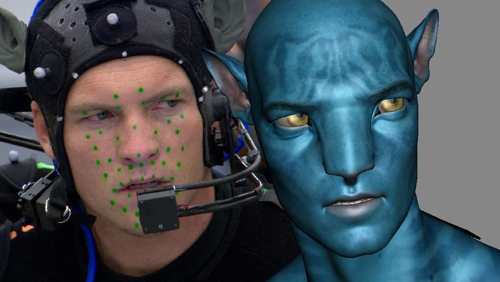

В применении компьютерной графики существовала одна загвоздка под кодовым названием «зловещая долина». Смысл ее в том, что любое животное, нарисованное на компьютере, воспринимается зрителем без претензий – для него все медведи «на одно лицо», и мало кто обратит внимание, если уши медведя больше положенных или глаза не той формы. Карикатура на человека тоже ни у кого не вызывает нареканий. Но попытки точного фотографического воспроизведения человеческого лица производят отталкивающее впечатление и вызывают подсознательное отвращение: таким образом человеческий мозг реагирует на то, что его пытаются надуть (возможно, дело в том, что идеально симметричные человеческие лица, которые создает компьютер, в реальной жизни встречаются крайне редко). Анимированный же объект такого рода лишь усиливает неприятное ощущение. Поэтому сегодняшних роботов не делают похожими на людей, и манекенов не стараются превратить в высокоточные фигуры из музея мадам Тюссо. Так что вовсе не удивительно, что Pixar, рисуя людей, предпочитает карикатурную подачу: человеческая мимика слишком сложна для того, чтобы ее мог просчитать и натуралистично воспроизвести даже самый сверхмощный компьютер, так что лучше не позориться. Приверженец «старой школы» Сильвен Шомэ сказал на этот счет: «Компьютерная графика хороша для изображения игрушек и роботов, но не людей». Однако компьютерные технологии, если они претендуют на завоевание мира, не могут обойтись без человеческих лиц! Как же придать компьютерным homo sapiens реалистичности?
В борьбе за реализм оформился любопытный эксперимент: начиная с середины нулевых Роберт Земекис, когда-то подруживший анимационного кролика Роджера с киноактером Бобом Хоскинсом, несколько лет пытался привить плосковатым мультяшным персонажам человеческие черты: он снимал игру живых актеров, которых после этого трансформировал в мультперсонажей (с сохранением лицевого сходства), и получал на выходе трехмерные мультфильмы, в которых не только голоса, но и мимика, и движения принадлежали реальным кинозвездам. Зачем мучиться с программированием мимики (сложнейший процесс, управляемый огромным количеством мышц!), если можно просто сосканировать ее с живого лица? Визуальный результат был впечатляющим, а вот бокс-офис – нет. К сожалению, и «Тайна красной планеты», и другие работы Земекиса в этом направлении оказались слишком финансово затратными и по итогу не окупились в прокате, так что режиссер был вынужден вернуться в игровое кино. Но технология motion capture (или «захвата движения»), впервые продемонстрированная им в «Полярном экспрессе», привлекла внимание Джеймса Кэмерона – тот переосмыслил ее в фильме «Аватар» и передал Питеру Джексону, продолжившему тему кинокомиксом «Тинтин». Судя по тому что к «Аватару» уже анонсировано три сиквела, похоже, именно в этой области нас ждет большинство киноэкспериментов в ближайшие годы. И да, благодаря motion capture мимика киногероев усовершенствовалась, хотя на развитие анимации как таковой это пока не влияет: «захват движения» сегодня более популярен в кино, чем в мультфильмах, а ведущие анимационные студии упорно продолжают ваять карикатурные лица.
Метод захвата движения применяется в производстве CGI-мультфильмов, а также для создания спецэффектов в фильмах. Широко используется в игровой индустрии. С использованием этого метода в 2004 году созданы мультфильмы «Полярный экспресс» (модель - Том Хэнкс), «Последняя фантазия», «Властелин колец» (модель - Энди Серкис). В 2006 - 2012 году при помощи этой технологии был создан «Ренессанс», «Беовульф», «Рождественская история», «Аватар», «Гарри Поттер», «Пираты Карибского моря», «Ранго».